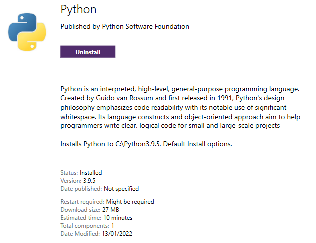
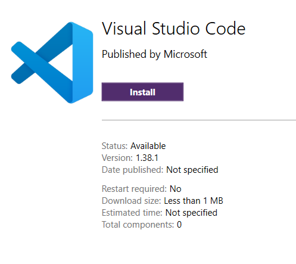
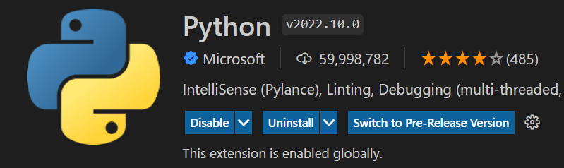
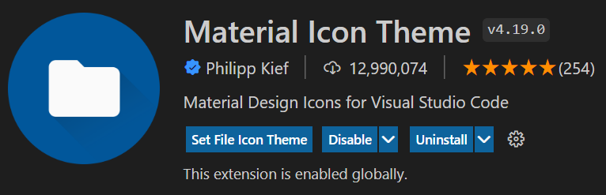
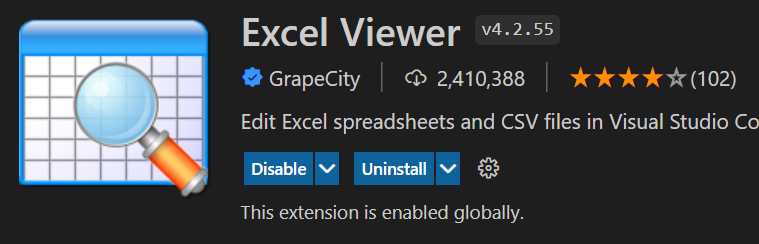
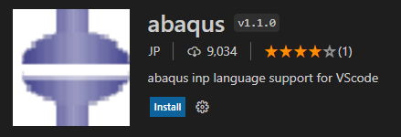

Getting Started
Install Python interpreter
If you have used Fastpipe installed on your system then Python 3.9 should already be installed. To check what python version is installed on your system, type the following command in command prompt.
py -3 --version
Note
FastFEA is compatible with Python version 3.9 and above.
If you do not have python 3.9.0 installed on your system then please install from the software centre.
{kind=link}
Installing FastFEA Package
Create a Virtual Environment
To create a virtual environment in which to install FastFEA, run the following, where fastfea is the name of the virtual environment being created:
python -m venv %userprofile%\.virtualenvs\fastfea
Activate the Virtual Environment
To activate the new environment, run:
%userprofile%\.virtualenvs\fastfea\Scripts\activate
Update pip Package Manager
It is good practice to update the pip package manager to ensure you have the latest version:
python -m pip install --upgrade pip
Install FastFEA
Please download the .whl file from the teams page. Once downloaded, please follow the following commands to install fastfea.
python -m pip install <whl-file>
Once installed, please run the following command to obtain the fastpipe.pth file.
fastfea --show path
Move the fastfea.pth file to the abaqus installation of python so that abaqus can find the fastfea package. The python installation for Abaqus is generally found in the following folder:
C:\SIMULIA\EstProducts\2020\win_b64\tools\SMApy\python2.7\Lib\site-packages
Setup VS Code
Visual Studio Code is a lightweight source code editor. VS Code comes with many features such as IntelliSense, code editing, and extensions that allow you to edit and run Python source code effectively.
Install VS Code
Download VScode from the software centre.
{kind=link}
Install Extensions
Search and install the following extensions from the extensions tab.
   {kind=link}
{kind=link}
{kind=link}
{kind=link}